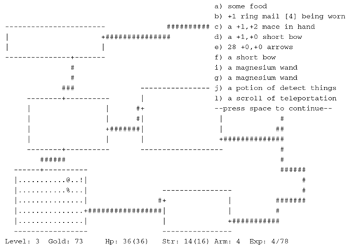
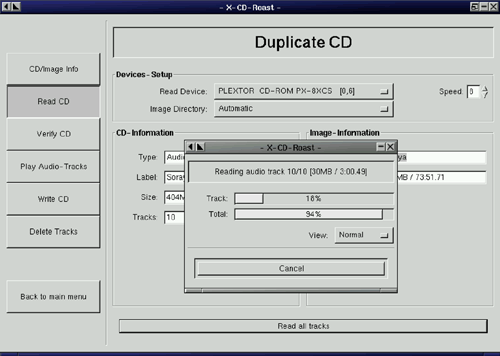

| [ Team LiB ] |
|
11.6 Unix Interface Design PatternsIn the Unix tradition, the tradeoffs we described above are met by well-established interface design patterns. Here is a bestiary of these patterns, with analyses and examples. We'll follow it with a discussion of how to apply them. Note that this bestiary does not include GUI design patterns (though it includes a design pattern that can use a GUI as a component). There are no design patterns in graphical user interfaces themselves that are specifically native to Unix. A promising beginning of a discussion of GUI design patterns in general can be found at Experiences—A Pattern Language for User Interface Design [Coram-Lee]. Also note that programs may have modes that fit more than one interface pattern. A program that has a compiler-like interface, for example, may behave as a filter when no file arguments are specified on the command line (many format converters behave like this). 11.6.1 The Filter PatternThe interface-design pattern most classically associated with Unix is the filter. A filter program takes data on standard input, transforms it in some fashion, and sends the result to standard output. Filters are not interactive; they may query their startup environment, and are typically controlled by command-line options, but they do not require feedback or commands from the user in their input stream. Two classic examples of filters are tr(1) and grep(1). The tr(1) program is a utility that translates data on standard input to results on standard output using a translation specification given on the command line. The grep(1) program selects lines from standard input according to a match expression specified on the command line; the resulting selected lines go to standard output. A third is the sort(1) utility, which sorts lines in input according to criteria specified on the command line and issues the sorted result to standard output. Both grep(1) and sort(1) (but not tr(1)) can alternatively take data input from a file (or files) named on the command line, in which case they do not read standard input but act instead as though that input were the catenation of the named files read in the order they appear. (In this case it is also expected that specifying "-" as a filename on the command line will direct the program explicitly to read from standard input.) The archetype of such 'catlike' filters is cat(1), and filters are expected to behave this way unless there are application-specific reasons to treat files named on the command line differently. When designing filters, it is well to bear in mind some additional rules, partly developed in Chapter 1:
The term "filter" for this pattern is long-established Unix jargon.
Some programs have interface design patterns like the filter, but even simpler (and, importantly, even easier to script). They are cantrips, sources, and sinks. 11.6.2 The Cantrip PatternThe cantrip interface design pattern is the simplest of all. No input, no output, just an invocation and a numeric exit status. A cantrip's behavior is controlled only by startup conditions. Programs don't get any more scriptable than this. Thus, the cantrip design pattern is an excellent default when the program doesn't require any runtime interaction with the user other than fairly simple setup of initial conditions or control information. Indeed, because scriptability is important, Unix designers learn to resist the temptation to write more interactive programs when cantrips will do. A collection of cantrips can always be driven from an interactive wrapper or shell program, but interactive programs are harder to script. Good style therefore demands that you try to find a cantrip design for your tool before giving in to the temptation to write an interactive interface that will be harder to script. And when interactivity seems necessary, remember the characteristic Unix design pattern of separating the engine from the interface; often, the right thing is an interactive wrapper written in some scripting language that calls a cantrip to do the real work. The console utility clear(1), which simply clears your screen, is the purest possible cantrip; it doesn't even take command-line options. Other classic simple examples are rm(1) and touch(1). The startx(1) program used to launch X is a complex example, typical of a whole class of daemon-summoning cantrips. This interface design pattern, though fairly common, has not traditionally been named; the term "cantrip" is my invention. (In origin, it's a Scots-dialect word for a magic spell, which has been picked up by a popular fantasy-role-playing game to tag a spell that can be cast instantly, with minimal or no preparation.) 11.6.3 The Source PatternA source is a filter-like program that requires no input; its output is controlleld only by startup conditions. The paradigmatic example would be ls(1), the Unix directory lister. Other classic examples include who(1) and ps(1). Under Unix, report generators like ls(1), ps(1), and who(1) tend strongly to obey the source pattern, so their output can be filtered with standard tools. The term 'source' is, as Doug McIlroy noted, very traditional. It is less common than it might be because 'source' has other important meanings. 11.6.4 The Sink PatternA sink is a filter-like program that consumes standard input but emits nothing to standard output. Again, its actions on the input data are controlled only by startup conditions. This interface pattern is unusual, and there are few well-known examples. One is lpr(1), the Unix print spooler. It will queue text passed to it on standard input for printing. Like many sink programs, it will also process files named to it on the command line. Another example is mail(1) in its mail-sending mode. Many programs that might appear at first glance to be sinks take control information as well as data on standard input and are actually instances of something like the ed pattern (see below). The term sponge is sometimes applied specifically to sink programs like sort(1) that must read their entire input before they can process any of it. The term 'sink' is traditional and common. 11.6.5 The Compiler PatternCompiler-like programs use neither standard output nor standard input; they may issue error messages to standard error, however. Instead, a compiler-like program takes file or resource names from the command line, transforms the names of those resources in some way, and emits output under the transformed names. Like cantrips, compiler-like programs do not require user interaction after startup time. This pattern is so named because its paradigm is the C compiler, cc(1) (or, under Linux and many other modern Unixes, gcc(1)). But it is also widely used for programs that do (for example) graphics file conversions or compression/decompression. A good example of the former is the gif2png(1) program used to convert GIF (Graphic Interchange Format) to PNG (Portable Network Graphics).[3] Good examples of the latter are the gzip(1) and gunzip(1) GNU compression utilities, almost certainly shipped with your Unix system.
In general, the compiler interface design pattern is a good model when your program often needs to operate on multiple named resources and can be written to have low interactivity (with its control information supplied at startup time). Compiler-like programs are readily scriptable. The term "compiler-like interface" for this pattern is well-understood in the Unix community. 11.6.6 The ed patternAll the previous patterns have very low interactivity; they use only control information passed in at startup time, and separate from the data. Many programs, of course, need to be driven by a continuing dialog with the user after startup time. In the Unix tradition, the simplest interactive design pattern is exemplified by ed(1), the Unix line editor. Other classic examples of this pattern include ftp(1) and sh(1), the Unix shell. The ed(1) program takes a filename argument; it modifies that file. On its input, it accepts command lines. Some of the commands result in output to standard output, which is intended to be seen immediately by the user as part of the dialog with the program. An actual sample ed(1) session will be included in Chapter 13. Many browserlike and editorlike programs under Unix obey this pattern, even when the named resource they edit is something other than a text file. Consider gdb(1), the GNU symbolic debugger, as an example. Programs obeying the ed interface design pattern are not quite so scriptable as would be the simpler interface types resembling filters. You can feed them commands on standard input, but it is trickier to generate sequences of commands (and interpret any output they might ship back) than it is to just set environment variables and command-line options. If the action of the commands is not so predictable that they can be run blind (e.g., with a here-document as input and ignoring output), driving ed-like programs requires a protocol, and a corresponding state machine in the calling process. This raises the problems we noted in Chapter 7 during the discussion of slave process control. Nevertheless, this is the simplest and most scriptable pattern that supports fully interactive programs. Accordingly, it is still quite useful as a component of the "separated engine and interface" pattern we'll describe below. 11.6.7 The Roguelike PatternThe roguelike pattern is so named because its first example was the dungeon-crawling game rogue(1) (see Figure 11.2) under BSD; the adjective "roguelike" for this pattern is widely recognized in Unix tradition. Roguelike programs are designed to be run on a system console, an X terminal emulator, or a video display terminal. They use the full screen and support a visual interface style, but with character-cell display rather than graphics and a mouse. Figure 11.2. Screen shot of the original Rogue game. Commands are typically single keystrokes not echoed to the user (as opposed to the command lines of the ed pattern), though some will open a command window (often, though not always, the last line of the screen) on which more elaborate invocations can be typed. The command architecture often makes heavy use of the arrow keys to select screen locations or lines on which to operate. Programs written in this pattern tend to model themselves on either vi(1) or emacs(1) and (obeying the Rule of Least Surprise) use their command sequences for common operations such as getting help or terminating the program. Thus, for example, one can expect one of the commands 'x', 'q', or 'C-x C-c' to terminate a program written to this pattern. Some other interface tropes associated with this pattern include: (a) the use of one-item-per-line menus, with the currently-selected item indicated by bold or reverse-video highlighting, and (b) 'mode lines'—program status summaries carried on a highlighted screen line, often near the bottom or at the top of the screen. The roguelike pattern evolved in a world of video display terminals; many of these didn't have arrow or function keys. In a world of graphics-capable personal computers, with character-cell terminals a fading memory, it's easy to forget what an influence this pattern exerted on design; but the early exemplars of the roguelike pattern were designed a few years before IBM standardized the PC keyboard in 1981. As a result, a traditional but now archaic part of the roguelike pattern is the use of the h, j, k, and l as cursor keys whenever they are not being interpreted as self-inserting characters in an edit window; invariably k is up, j is down, h is left, and l is right. This history also explains why older Unix programs tend not to use the ALT keys and to use function keys in a limited way if at all. Programs obeying this pattern are legion: The vi(1) text editor in all its variants, and the emacs(1) editor; elm(1), pine(1), mutt(1), and most other Unix mail readers; tin(1), slrn(1), and other Usenet newsreaders; the lynx(1) Web browser; and many others. Most Unix programmers spend most of their time driving programs with interfaces like these. The roguelike pattern is hard to script; indeed scripting it is seldom even attempted. Among other things, this pattern uses raw-mode character-by-character input, which is inconvenient for scripting. It's also quite hard to interpret the output programmatically, because it usually consists of sequences of incremental screen-painting actions. Nor does this pattern have the visual slickness of a mouse-driven full GUI. While the point of using the full screen interface is to support simple kinds of direct-manipulation and menu interfaces, roguelike programs still require users to learn a command repertoire. Indeed, interfaces built on the roguelike pattern show a tendency to degenerate into a sort of cluttered wilderness of modes and meta-shift-cokebottle commands that only hard-core hackers can love. It would seem that this pattern has the worst of both worlds, being neither scriptable nor conforming to recent fashions in design for end-users. But there must be some value in this pattern. Roguelike mailers, newsreaders, editors, and other programs remain extremely popular even among people who invariably run them through terminal emulators on an X display that supports GUI competitors. Moreover, the roguelike pattern is so pervasive that under Unix even GUI programs often emulate it, adding mouse and graphics support to a command and display interface that still looks rather roguelike. The X mode of emacs(1), and the xchat(1) client are good examples of such adaptation. What accounts for the pattern's continuing popularity? Efficiency, and perceived efficiency, seem to be important factors. Roguelike programs tend to be fast and lightweight relative to their nearest GUI competitors. For startup and runtime speed, running a roguelike program in an Xterm may be preferable to invoking a GUI that will chew up substantial resources setting up its displays and respond more slowly afterwards. Also, programs with a roguelike design pattern can be used over telnet links or low-speed dialup lines for which X is not an option. Touch-typists often prefer roguelike programs because they can avoid taking their hands off the keyboard to move a mouse. Given a choice, touch-typists will prefer interfaces that minimize keystrokes far off the home row; this may account for a significant percentage of vi(1)'s popularity. Perhaps more importantly, roguelike interfaces are predictable and sparing in their use of screen real estate on an X display; they do not clutter the display with multiple windows, frame widgets, dialog boxes, or other GUI impedimenta. This makes the pattern well suited for use in programs that must frequently share the user's attention with other programs (as is especially the case with editors, mailers, newsreaders, chat clients, and other communication programs). Finally (and probably most importantly) the roguelike pattern tends to appeal more than GUIs to people who value the concision and expressiveness of a command set enough to tolerate the added mnemonic load. We saw above that there are good reasons for this preference to become more common as task complexity, use frequency, and user experience rise. The roguelike pattern meets this preference while also supporting GUI-like elements of direct manipulation as an ed-pattern program cannot. Thus, far from having only the worst of both worlds, the roguelike interface design pattern can capture some of the best. 11.6.8 The 'Separated Engine and Interface' PatternIn Chapter 7 we argued against building monster single-process monoliths, and that it is often possible to lower the global complexity of programs by splitting them into communicating pieces. In the Unix world, this tactic is frequently applied by separating the 'engine' part of the program (core algorithms and logic specific to its application domain) from the 'interface' part (which accepts user commands, displays results, and may provide services such as interactive help or command history). In fact, this separated-engine-and-interface pattern is probably the one most characteristic interface design pattern of Unix. (The other, more obvious candidate for that distinction would be filters. But filters are more often found in non-Unix environments than engine/interface pairs with bidirectional traffic between them. Simulating pipelines is easy; the more sophisticated IPC mechanisms required for engine/interface pairs are hard.) Owen Taylor, maintainer of the GTK+ library widely used for writing user interfaces under X, beautifully brings out the engineering benefits of this kind of partitioning at the end of his note Why GTK_MODULES is not a security hole <http://www.gtk.org/setuid.html>; he finishes by writing "[T]he secure setuid program is a 500 line program that does only what it needs to, rather than a 500,000 line library whose essential task is user interfaces". This is not a new idea. Xerox PARC's early research into graphical user interfaces led them to propose the "model-view-controller" pattern as an archetype for GUIs.
In practice, the view and controller parts tend to be more closely bound together than either is to the model. Most GUIs, for example, combine view and controller behavior. They tend to be separated only when the application demands multiple views of the model. Under Unix, application of the model/view/controller pattern is far more common than elsewhere precisely because there is a strong "do one thing well" tradition, and IPC methods are both easy and flexible. An especially powerful form of this technique couples a policy interface (often a GUI combining view and controller functions) with an engine (model) that contains an interpreter for a domain-specific minilanguage. We examined this pattern in Chapter 8, focusing on minilanguage design; now it's time to look at the different ways that such engines can form components of larger systems of code. There are several major variants of this pattern. 11.6.8.1 Configurator/Actor PairIn a configurator/actor pair, the interface part controls the startup environment of a filter or daemon-like program which then runs without requiring user commands. The programs fetchmail(1) and fetchmailconf(1) (which we've already used as case studies in discoverability and data-driven programming and will encounter again as language case studies in Chapter 14) are a good example of a configurator/actor pair. fetchmailconf is the interactive dotfile configurator that ships with fetchmail. fetchmailconf can also serve as a GUI wrapper that runs fetchmail in either foreground or background mode. This design pattern enables both fetchmail and fetchmailconf to specialize in what they do well, and indeed to be written in different languages appropriate to their task domains. Fetchmail, which usually runs in background as a daemon, need not be bloated with GUI code. Conversely, fetchmailconf can specialize in elaborate GUIness without exacting size and complexity costs from fetchmail. Finally, because the information channels between them are narrow and well-defined, it remains possible to drive fetchmail from the command line and from scripts other than fetchmailconf. The term "configurator/actor" is my invention. 11.6.8.2 Spooler/Daemon PairA slight variant of the configurator/actor pair can be useful in situations that require serialized access to a shared resource in a batch mode; that is, when a well-defined job stream or sequence of requests requires some shared resource, but no individual job requires user interaction. In this spooler/daemon pattern, the spooler or front end simply drops job requests and data in a spool area. The job requests and data are simply files; the spool area is typically just a directory. The location of the directory and the format of the job requests are agreed on by the spooler and daemon. The daemon runs forever in background, polling the spool directory, looking there for work to do. When it finds a job request, it tries to process the associated data. If it succeeds, the job request and data are deleted out of the spool area. The classic example of this pattern is the Unix print spooler system, lpr(1)/lpd(1). The front end is lpr(1); it simply drops files to be printed in a spool area periodically scanned by lpd. lpd's job is simply to serialize access to the printer devices. Another classic example is the pair at(1)/atd(1), which schedules commands for execution at specified times. A third example, historically important though no longer in wide use, was UUCP—the Unix-to-Unix Copy Program commonly used as a mail transport over dial-up lines before the Internet explosion of the early 1990s. The spooler/daemon pattern remains important in mail-transport programs (which are batchy by nature). The front ends of mail transports such as sendmail(1) and qmail(1) usually make one try at delivering mail immediately, through SMTP over an outbound Internet connection. If that attempt fails, the mail will fall into a spool area; a daemon version or mode of the mail transport will retry the delivery later. Typically, a spooler/daemon system has four parts: a job launcher, a queue lister, a job-cancellation utility, and a spooling daemon, In fact, the presence of the first three parts is a sure clue that there is a spooler daemon behind them somewhere. The terms "spooler" and "daemon" are well-established Unix jargon. ('Spooler' actually dates back to early mainframe days.) 11.6.8.3 Driver/Engine PairIn this pattern, unlike a configurator/actor or spooler/server pair, the interface part supplies commands to and interprets output from an engine after startup; the engine has a simpler interface pattern. The IPC method used is an implementation detail; the engine may be a slave process of the driver (in the sense we discussed in Chapter 7) or the engine and driver may communicate through sockets, or shared memory, or any other IPC method. The key points are (a) the interactivity of the pair, and (b) the ability of the engine to run standalone with its own interface. Such pairs are trickier to write than configurator/actor pairs because they are more tightly and intricately coupled; the driver must have knowledge not merely about the engine's expected startup environment but about its command set and response formats as well. When the engine has been designed for scriptability, however, it is not uncommon for the driver part to be written by someone other than the engine author, or for more than one driver to front-end a given engine. An excellent example of both is provided by the programs gv(1) and ghostview(1), which are drivers for gs(1), the Ghostscript interpreter. GhostScript renders PostScript to various graphics formats and lower-level printer-control languages. The gv and ghostview programs provide GUI wrappers for GhostScript's rather idiosyncratic invocation switches and command syntax. Another excellent example of this pattern is the xcdroast/cdrtools combination. The cdrtools distribution provides a program cdrecord(1) with a command-line interface. The cdrecord code specializes in knowing everything about talking to CD-ROM hardware. xcdroast is a GUI; it specializes in providing a pleasant user experience. The xcdroast(1) program calls cdrecord(1) to do most of its work. Figure 11.3. The Xcdroast GUI. xcdroast also calls other CLI tools: cdda2wav(1) (a sound file converter) and mkisofs(1) (a tool for creating ISO-9660 CD-ROM file system images from a list of files). The details of how these tools are invoked are hidden from the user, who can think in terms centered on the task of making CDs rather than having to know directly about the arcana of sound-file conversion or file-system structure. Equally important, the implementers of each of these tools can concentrate on their domain-specific expertise without having to be user-interface experts.
It's important to design the engine so that it not only does the right thing, but also notifies the driver about what it's doing so the driver can present a graceful interface with appropriate feedback. The terms "driver" and "engine" are uncommon but established in the Unix community. 11.6.8.4 Client/Server PairA client/server pair is like a driver/engine pair, except that the engine part is a daemon running in background which is not expected to be run interactively, and does not have its own user interface. Usually, the daemon is designed to mediate access to some sort of shared resource—a database, or a transaction stream, or specialized shared hardware such as a sound device. Another reason for such a daemon may be to avoid performing expensive startup actions each time the program is invoked. Yesterday's paradigmatic example was the ftp(1)/ftpd(1) pair that implements FTP, the File Transfer Protocol; or perhaps two instances of sendmail(1), sender in foreground and listener in background, passing Internet email. Today's would have to be any browser/web server pair. However, this pattern is not limited to communication programs; another important case is in databases, such as the psql(1)/postmaster(1) pair. In this one, psql serializes access to a shared database managed by the postgres daemon, passing it SQL requests and presenting data sent back as responses. These examples illustrate an important property of such pairs, which is that the cleanliness of the protocol that serializes communication between them is all-important. If it is well-defined and described by an open standard, it can become a tremendous opportunity for leverage by insulating client programs from the details of how the server's resource is managed, and allowing clients and servers to evolve semi-independently. All separated-engine-and-interface programs potentially get this kind of benefit from clean separation of function, but in the client/server case the payoffs for getting it right tend to be particularly high exactly because managing shared resources is intrinsically difficult. Message queues and pairs of named pipes can be and have been used for front-end/back-end communication, but the benefits of being able to run the server on a different machine from the client are so great that nowadays almost all modern client-server pairs use TCP/IP sockets. 11.6.9 The CLI Server PatternIt's normal in the Unix world for server processes to be invoked by harness programs[4] such as inetd(8) in such a way that the server sees commands on standard input and ships responses to standard output; the harness program then takes care of ensuring that the server's stdin and stdout are connected to a specified TCP/IP service port. One benefit of this division of labor is that the harness program can act as a single security gatekeeper for all of the servers it launches.
One of the classic interface patterns is therefore a CLI server. This is a program which, when invoked in a foreground mode, has a simple CLI interface reading from standard input and writing to standard output. When backgrounded, the server detects this and connects its standard input and standard output to a specified TCP/IP service port. In some variants of this pattern, the server backgrounds itself by default, and has to be told with a command-line switch when it should stay in foreground. This is a detail; the essential point is that most of the code neither knows nor cares whether it is running in foreground or a TCP/IP harness. POP, IMAP, SMTP, and HTTP servers normally obey this pattern. It can be combined with any of the server/client patterns described earlier in this chapter. An HTTP server can also act as a harness program; the CGI scripts that supply most live content on the Web run in a special environment provided by the server where they can take input (form arguments) from standard input, and write the generated HTML that is their result to standard output. Though this pattern is quite traditional, the term "CLI server" is my invention. 11.6.10 Language-Based Interface PatternsIn Chapter 8 we examined domain-specific minilanguages as a means of pushing program specification up a level, gaining flexibility, and minimizing bugs. These virtues make the language-based CLI an important style of Unix interface—one exemplified by the Unix shell itself. The strengths of this pattern are well illustrated by the case study earlier in the chapter comparing dc(1)/bc(1) with xcalc(1). The advantages that we observed earlier (the gain in expressiveness and scriptability) are typical of minilanguages; they generalize to other situations in which you routinely have to sequence complex operations in a specialized problem domain. Often, unlike the calculator case, minilanguages also have a clear advantage in concision. One of the most potent Unix design patterns is the combination of a GUI front end with a CLI minilanguage back end. Well-designed examples of this type are necessarily rather complex, but often a great deal simpler and more flexible than the amount of ad-hoc code that would be necessary to cover even a fraction of what the minilanguage can do. This general pattern is not, of course, unique to Unix. Modern database suites everywhere normally consist of one or more GUI front ends and report generators, all of which talk to a common back-end using a query language such as SQL. But this pattern mainly evolved under Unix and is still much better understood and more widely applied there than elsewhere. When the front and back ends of a system fulfilling this design pattern are combined in a single program, that program is often said to have an 'embedded scripting language'. In the Unix world, Emacs is one of the best-known exemplars of this pattern; refer to our discussion of it in Chapter 8 for some advantages. The script-fu facility of GIMP is another good example. GIMP is a powerful open-source graphics editor. It has a GUI resembling that of Adobe Photoshop. Script-fu allows GIMP to be scripted using Scheme (a dialect of Lisp); scripting through Tcl, or Perl or Python is also available. Programs written in any of these languages can call GIMP internals through its plugin interface. The demonstration application for this facility is a Web page[5] which allows people to construct simple logos and graphic buttons through a CGI interface that passes a generated Scheme program to an instance of GIMP, and returns a finished image.
|
| [ Team LiB ] |
|